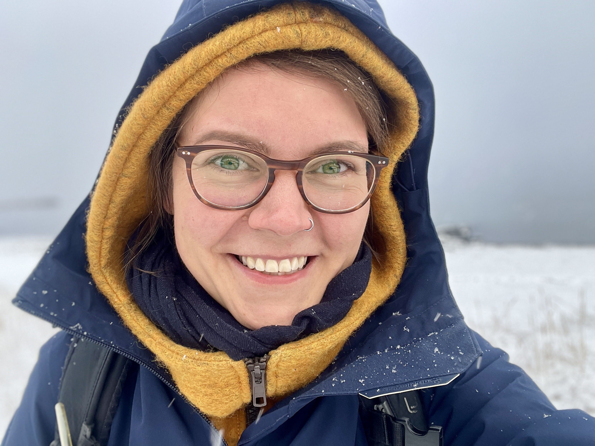

I'm a behavioural ecologist studying FEASTs (Foraging Ecology And Social Ties) in Indigenous communities and non-human animal societies. My research takes a comparative approach to understanding how individual-level decisions and social processes, such as social information use, collective hunting, and food sharing, interact to shape socio-ecological systems. I am particularly interested in the feedbacks between individual behaviour and social networks: how decisions shape social relationships, and how social position influences access to information, resources, and cooperative support that affect future decisions, including how individuals navigate their environments and respond to environmental risks.
I am committed to scientific integrity and transparency research, and and openly share data, analysis code, and research outputs via preprint servers, GitHub, and this website where possible. Where data involve sensitive human-subject or community-held information, I will only share synthetic datasets publicly, balancing data accessibility with ethical obligations, and allowing others to inspect, reproduce, and build on my work.
Kohrs E, et al. (2026).
Collaborating with early career researchers to enhance the future of scholarly publication: A guide for publishers.
Learned Publishing, 39:e2028,
doi: 10.1002/leap.2028.
[PDF]
Chan AHH, Dunning J, Burke T, Chik HYJ, Dunleavy D, Evans T, Ferreira A, Fourie B, Griffith SC, Hillemann F, & Schroeder J. (2025).
Animal social networks are robust to changing association definitions.
Behavioral Ecology and Sociobiology, 79:26,
doi: 10.1007/s00265-025-03559-7.
[PDF]
[tl;dr]
Van Doren BM, DeSimone JG, Firth JA, Hillemann F, Gayk Z, Cohen E, & Farnsworth A. (2025).
Social associations across species during nocturnal bird migration.
Current Biology, 35:898-904,
doi: 10.1016/j.cub.2024.12.033.
[PDF]
[tl;dr]
Wascher CAF & Hillemann F. (2024).
Observation of female-male mounting in the carrion crow.
Behavioural Processes, 219:105055,
doi: 10.1016/j.beproc.2024.105055.
[PDF]
[tl;dr]
Davidson JD, de Oliveira Lopes FN, Safaei S, Hillemann F, Russell NJ, & Schaare HL. (2023).
Postdoctoral researchers’ perspectives on working conditions and equal opportunities in German academia.
Frontiers in Psychology, 14:1217823,
doi: 10.3389/fpsyg.2023.1217823.
[PDF]
[tl;dr]
Hillemann F, Beheim BA, & Ready E. (2023).
Socio-economic predictors of Inuit hunting choices and their implications for climate change adaptation.
Philosophical Transactions of the Royal Society B, 378:20220395,
doi: 110.1098/rstb.2022.0395.
[PDF]
[talk]
[tl;dr]
Braga PHP, Hébert K, Hudgins EJ, Scott ER, Edwards BPM, Sánchez Reyes LL, Grainger M, Foroughirad V, Hillemann F, Binley A, Brookson C, Gaynor K, Sabet SS, Güncan A, Weierbach H, Gomes DGE, & Crystal-Ornelas R. (2023).
Not just for programmers: How GitHub can accelerate collaborative and reproducible research in ecology and evolution.
Methods in Ecology and Evolution, 14:1364-1380,
doi: 10.1111/2041-210X.14108.
[PDF]
[tl;dr]
Cantor M, Maldonado-Chaparro AA, Beck K, Brandl HB, Carter GG, He P, Hillemann F, Klarevas-Irby JA, Ogino M, Papageorgiou D, Prox L, & Farine DR. (2021.)
The importance of individual-to-society feedbacks in animal ecology and evolution.
Journal of Animal Ecology, 90:27-44,
doi: 10.1111/1365-2656.13336.
[PDF]
[tl;dr]
Hillemann F, Cole EF, Sheldon BC, & Farine DR. (2020).
Information use in foraging flocks of songbirds - no evidence for social transmission of patch quality.
Animal Behaviour, 165:35-41,
doi: 10.1016/j.anbehav.2020.04.024.
[PDF]
[talk]
[tl;dr]
Hillemann F, Cole EF, Keen SC, Sheldon BC, & Farine DR. (2019).
Diurnal variation in the production of vocal information about food supports a model of social adjustment in wild songbirds.
Proceedings of the Royal Society B: Biological Sciences, 286:20182740,
doi: 10.1098/rspb.2018.2740.
[PDF]
[tl;dr]
Wascher CAF, Hillemann F, Canestrari D, & Baglione V. (2015).
Carrion crows learn to discriminate between calls of reliable and unreliable conspecifics.
Animal Cognition, 18:1181-1185,
doi: 10.1007/s10071-015-0879-8.
[PDF]
Hillemann F, Bugnyar T, Kotrschal K, & Wascher CAF. (2014).
Waiting for better, not for more: Corvids respond to quality in two delay maintenance tasks.
Animal Behaviour, 90:1-10,
doi: 10.1016/j.anbehav.2014.01.007.
[PDF]
Hillemann F, Miu E, Pretelli I, Kroupin I, & Lew-Levy S.
A cultural evolutionary approach to organising purposeful scientific meetings.
PsyArXiv, doi: 10.31234/osf.io/86as9_v2.
[Preprint]
Hillemann F, Burant JB, Čulina A, & Vriend SJG.
Code review in practice: A checklist for computational reproducibility and collaborative research in ecology and evolution.
EcoEvoRxiv, doi: 10.32942/X26S6P.
[Preprint]
[Checklist App]
[tl;dr]
Hillemann F, Beheim BA, & Ready E.
Linking weather to day-to-day foraging decisions: A Going-Out Model.
Hillemann F & Ready E.
Inclusive Climate Science and Policy Require New Infrastructures for Ethical Data Management.
SocArXiv, doi: 10.31235/osf.io/y3za5_v1.
[Preprint]
Visine A, Hillemann F, Holden E, Ndenguele R, Ngoma GR, & Lew-Levy S.
Congolese BaYaka children’s learning and exploring in a village context.
Gazda MA*, Hillemann F*, Cai H, Dharmaraaj B, Filippi CV, Kolay S, Nagarajan-Radha V, Bagley RK, Neiman M, & Singh-Shepherd S.
Preprint solicitation as a natural experiment in scholarly publishing.
Wascher CAF, et al.
Unsung Songbirds: Advances in the Study of Corvid Communication.
EcoEvoRxiv, doi: 10.32942/X26S6P.
[Preprint]
Hillemann F, Cole EF, Farine DR, & Sheldon BC.
Wild songbirds exhibit consistent individual differences in interspecific social behaviour.
bioRxiv, doi: 10.1101/746545.
[Preprint]
[tl;dr]
Susini I, Safryghin A, Hillemann F, & Wascher CAF.
Delay of gratification in non-human animals: A review of inter- and intra-specific variation in performance.
bioRxiv, doi: 10.1101/2020.05.05.078659.
[Preprint]
Hillemann F, Burant JB, Visser ME, Vriend SJG, Čulina A, & the SPI-Birds Network. (2024)
Integrating long-term studies of individuals for improved generalisability in animal ecology and evolution.
ECBB (European Conference in Behavioural Biology)
[link]
Bagley R & Hillemann F. (2023)
Equitably soliciting preprints for journal submission: Challenges and opportunities.
QUEST (Quality, Ethics, Open Science, Translation) Center for Responsible Research
[link]
[Interview]
Humboldt Foundation: Why Collaborative Networks Matter – in Society and in Academia. By Press Office Humboldt Foundation.
[Video]
Back Garden Biology: Feed the birds? By Lindsay Turnbull.
[Article]
Audobon: The Surprising Connection Between Birds, Facebook, and Other Social Networks. By Kat McGowan.
[Article]
medium: Spring at the Laboratory with Leaves. By Graduate Study at Oxford.
[Article]
Audobon: Crows and Ravens are Masters of Self-Control. By Purbita Saha.
[Article]
Gizmodo: What Can Crows and Ravens Teach People About Resisting Temptation? By Jason G. Goldman.
[Article]
Scientific American: Self-Controlled Crows Ace the Marshmallow Test. By Jyoti Madhusoodanan.
| since Sep 2024 | Postdoctoral Research Fellow (von Humboldt Foundation), Dept. of Psychology, Durham University |
| Aug 2024 - Feb 2024 | Data Science Technician. SPI-Birds, Dept. of Animal Ecology, Netherlands Institute of Ecology (NIOO-KNAW) |
| Jan 2024 - Jul 2020 | Postdoctoral Researcher. Dept. of Human Behavior, Ecology and Culture, MPI for Evolutionary Anthropology |
| Jun 2020 - Jan 2020 | Database Manager and Field Assistant. EGI, Dept. of Zoology, University of Oxford |
| Mar 2020 - Oct 2015 | DPhil in Zoology. NERC-Oxford DTP in Environmental Research Studentship, University of Oxford |
| Oct 2015 - Oct 2012 | M.Sc. in Developmental, Neural and Behavioural Biology, University of Göttingen |
| Sep 2012 - May 2012 | Research Internship. Core Facility KLF for Behavior and Cognition, University of Vienna |
| Apr 2012 - Oct 2008 | B.Sc. in Biology. University of Göttingen |
Department of Psychology
Durham University
South Road, Durham DH1 3LE, United Kingdom